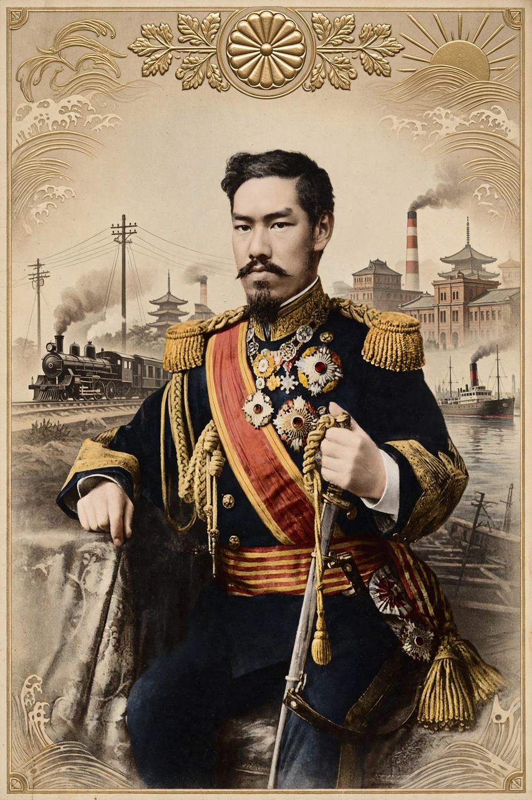

Meiji Restoration
From Wikipedia, the free encyclopedia

The Meiji Restoration (1868) was the political revolution that ended the Tokugawa shogunate and restored practical imperial rule to the young Emperor Meiji of Japan. It launched the Meiji period, a half-century of rapid modernisation — industrialisation, a conscript army, compulsory education and a constitution — that transformed Japan from a feudal society into a great power.
Background and the Boshin War
By the 1850s the shogunate was weakened by financial crisis, samurai discontent and foreign pressure after Commodore Matthew C. Perry's arrival in 1853 forced Japan open to trade. Reformist domains — Satsuma and Chōshū — allied under the slogan sonnō jōi ('revere the emperor, expel the barbarians'). In January 1868 imperial forces seized Kyoto and proclaimed the restoration; the ensuing Boshin War ended shogunate resistance by 1869.
The Meiji reforms
The new government abolished the domains (1871) and the hereditary privileges of the Samurai, who rebelled one last time in the Satsuma Rebellion of 1877. It built railways, telegraphs and model factories, sent the Iwakura Mission around the world, introduced conscription (1873) and compulsory schooling (1872), adopted the Gregorian calendar, and promulgated the Meiji Constitution in 1889, creating the Diet.
Consequences
Victories in the First Sino-Japanese War (1894–95) and Russo-Japanese War (1904–05) announced Japan as an imperial power, with colonies in Taiwan and Korea. The Restoration's legacy — a strong central state, reverence for the emperor and selective Westernisation — shaped Japan until 1945 and remains central to Japanese national identity.